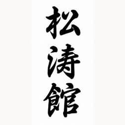

About
Profile:
Maurice Von Ekpenyong the author has a background and interest in sports having played
and taken part in a number of competitions, local and international level competitions etc:
these include Skiing, Ski-diving, Karate, Badmintion and recent years Backgammon.
Background:
Karate - Style Shotokan.

Has trained for over 26 years both in the UK and Japan, entering
both semi contact and full contact tournaments in the past.
Gaining various credits.
He holds a Black Belt 3rd Dan.
Backgammon: - The author has over the last 8 years taken part in a number Backgammon
competitions UK and Pan-European tournaments. Credits to date:
2013 Won the Yorkshire West Open Championships
2013 Won the Manchester Inter club championships
2019 Won the Greater Manchester Doubles Open Championships.
2021 Got to the semi-finals in the UK Open Championships..taking £1500 plus change!!
See gallary Photos:
Educational Background
UMIST: University of Manchester Institute of Science & Technology
BSc (hons) Electronics, Computer Engineering and Management
MSc Advanced Manufacturing and
Computer Systems.